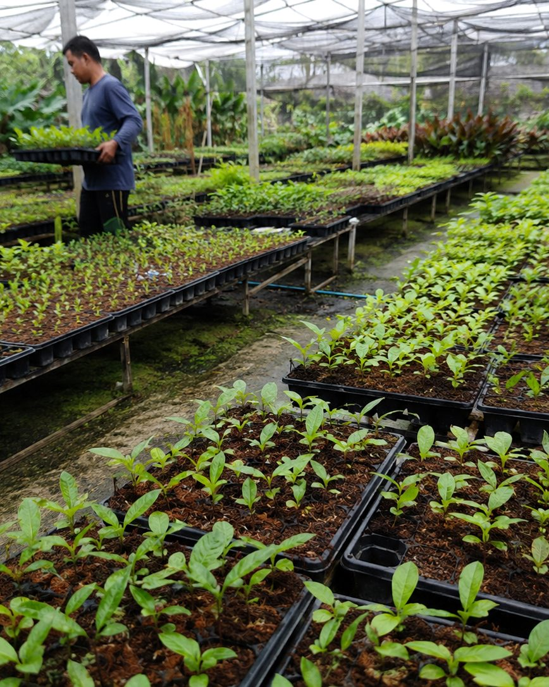
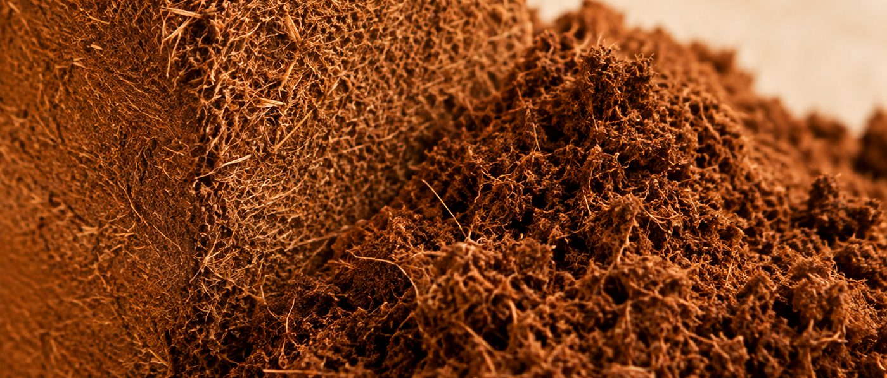
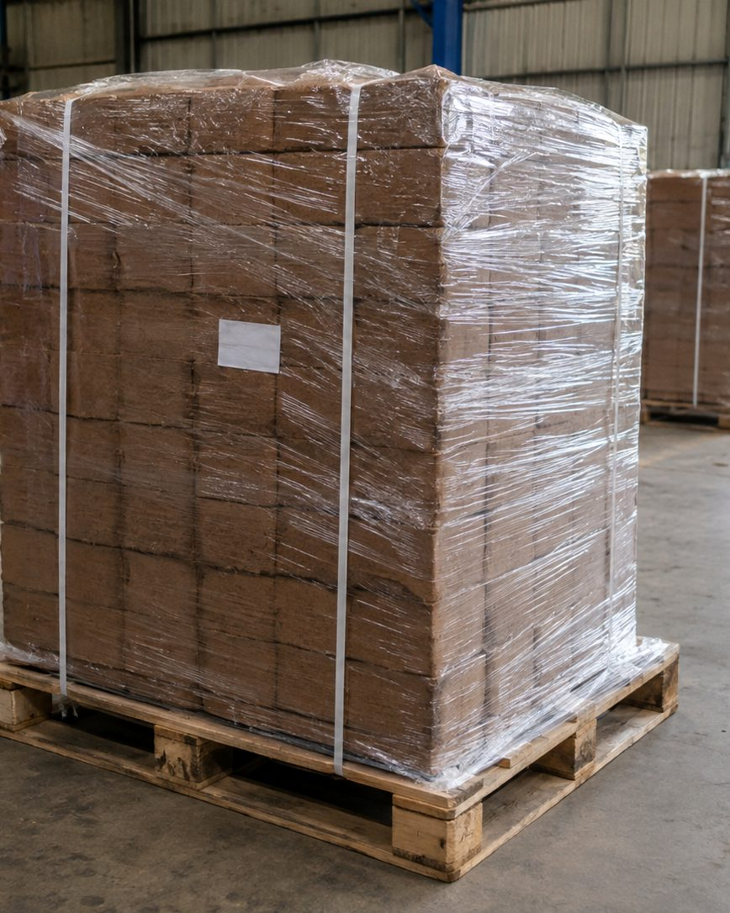

Cocopeat · coir pith · coconut coir
Cocopeat, exported from India.
Compressed blocks, briquettes, slabs and loose coir pith, supplied from South India to a grade agreed before production.
- 5 kg block
- 650 g briquette
- Grow slab
- Open-top bag
- Disc
- Propagation cube
- Loose pith
01 Why cocopeat
Growers do not buy it to be green. They buy it because it behaves.
The fine fraction left when a coconut husk is worked for fibre. Three properties explain why it replaced peat in high-value crops.
Water and air at once
Holds a large volume of water while keeping air around the roots, so a crop can be irrigated often without drowning.
Predictable under a drip line
It re-wets evenly instead of channelling. A feed programme behaves in the last month of a crop as it did in the first.
Near-inert, so you stay in control
Washed pith carries almost no nutrition of its own. What the crop gets is what you feed it.

Against peat
- A by-product of a crop already harvested, not a bog that took thousands of years to form.
- You can come off peat without changing how you grow.
What it is not
- Not a fertiliser. It is what the roots sit in, not what feeds them.
- Not all the same. Washing, screening and moisture decide how a batch performs.

02 How it is used
Where it ends up, and what it is doing there.
Slabs and filled bags under drip, for tomato, pepper, cucumber and soft fruit.
Cubes and plugs for cuttings, where an even, low-salt material matters most.
Blended into potting mixes to open the structure and hold water.
Bought loose or in blocks and blended to a maker's own recipe.
Briquettes and discs in printed sleeves, hydrated by the buyer.
From block to root zone
A block is a shipping format. It only becomes useful once it is wetted.

State 01 / as loaded
Dense, dry and stackable
You ship it at a fraction of the volume it will occupy. By this point every quality decision has already been taken.

State 02 / water added
Breaking down under water
Add water and the block gives way from the outside in. How cleanly, and how much water it takes, follows from the press.

State 03 / ready to fill
Open, airy, holding water
What the grower is actually buying: an open structure holding water and air together. What it expands to belongs on the batch analysis, not on a web page.
03 The range
Seven formats, one material.
Reselling it, filling pots with it, or growing in it directly. Choose a format.

The format most bulk cocopeat moves in. Palletised and strapped, or floor-loaded where that fills the box better.

Shelf-sized and dense enough to ship in volume. The usual start for a private-label range.

A compressed slab in its own wrap, planting windows cut in. Goes straight into a gutter.

Filled, perforated and ready to place. No hydration station to run, no loose material on the bench.

Swells to fill a pot or tray cell without being broken up first. More than one diameter.

Planting hole already formed, for cuttings. Propagation is the least forgiving use, so washing matters most here.

Screened and bagged for blenders working to their own recipe. Worth the freight when your process cannot take a hydration step.
Not sure? Describe the job and we will tell you what the trade uses.

Bought by the container, judged by the handful.
04 Where it goes wrong
Cocopeat fails quietly.
Three things decide whether a container is right, and none can be seen in a photograph.
Salt
Pith carries sodium and potassium from the husk. Too much and a young crop stalls. How well a batch was washed is invisible once it is pressed.
Screening
The ratio of fine pith to coarse chip sets how much air the roots keep once wet. Screened for the wrong crop it either dries out or waterlogs.
Moisture
How wet the pith was at the press decides what a block weighs and how cleanly it opens. The easiest of the three to get wrong.
None of it is exotic or secret. It is simply why the grade is settled before production rather than argued about after arrival. We would rather have that conversation at the start than at your port.
05 How an order runs
Five steps, and nothing is committed until the third.
You send four lines
Format, quantity, destination port, and roughly when you need it.
We agree the grade in writing
Salt, screening, washing, unit weight, packing and marks, settled before anyone quotes.
We quote, you decide
Price on your Incoterm, with validity, lead time and payment terms. A date, not a range.
Production and inspection
Checked against the agreed grade at the processor, before anything is wrapped.
Loading and documents
Stuffed, sealed and shipped, with the documents your bank and customs need.

06 For importers
The commercial detail, before you ask for it.
The terms most buyers want in the first message. None of it changes after a quotation is issued.
Payment terms
Advance with the order
Thirty percent advance. Paid once the grade is agreed in writing. It books production at the unit against your grade rather than against whatever is in the yard.
Against the scanned bill of lading
Seventy percent balance. The scanned copy reaches you as soon as the container is loaded and the balance is settled against it, before the original documents are released to you.
Terms of delivery
FOB · CFR · CIF
Quoted on whichever you work to. Tell us the destination port and we will price it that way.
What the quotation fixes
Price and how long it stands, lead time, quantity per container, packing and marks, and the port of loading. A date, not a range.
Nothing is committed early
The grade is written down before anyone quotes, and no money moves until you have accepted a price. You can stop at any point before that.
Judge it first if you would rather
Say so and we will get material to you to look at before you commit to a container.
07 What sits behind the supply
Presses, a sealed container, and a plant that is not ours.

Booked against your grade, not drawn from whatever is in the yard.

The last look at the material happens before the doors close, not after they open.

Professional glasshouse and nursery production.
We do not own a processing plant, and we do not claim to
The presses and yards above belong to partner processing units in South India that we buy from. None are ours, and we will arrange a visit to any of them. What is ours is the part that decides whether your container is right: choosing the unit that can make what you asked for, writing the grade down, checking the material against it, and answering for what arrives.
Start here
Send four lines and you will get a real answer.
Including when the answer is no. If the units we buy from cannot meet a requirement, we will say so rather than quote around it.
+91 92176 11218 · info@meadowsagriexports.com · Mon–Sat, IST
What to put in the message
- Format, or just describe what it is for
- Quantity in containers, tonnes or units
- Destination port, and your Incoterm if you have one
- Timing: when you need it at your end
Would rather judge it in your own hands first? Say so and we will get material to you.